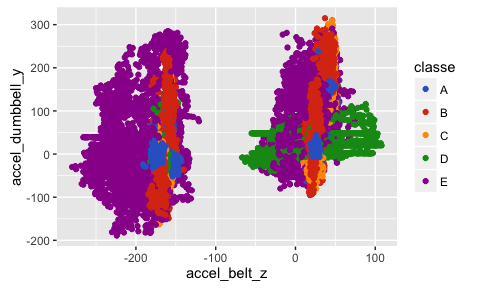
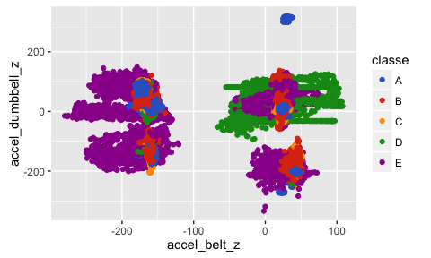
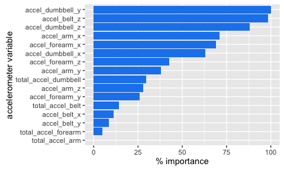

Exercise Quality
Synopsis
Exercise is becoming an important part of general health for individuals and is of interest to the healthcare community as a whole. Specifically, tracking the amount of exercise completed in a given time frame has been the focus of most fitness tracking devices. However, the future of exercise tracking will be determining the quality of exercise in addition to the quantity. This study will reference previously recorded exercise data in an attempt to predict quality of exercise from on-body and on-equipment sensor information.
Data Processing and Exploration
The data utilized was sourced from the Human Activity Recognition and Weight Lifting Exercises website.
The data was filtered to include only acceleration variables and sliced into a more managable data set.
wleTrain2<-select(wleTrain,contains("accel"),contains("classe"))
wleTrain3<-select(wleTrain2,-contains("var"))
InTrain<-createDataPartition(y=wleTrain3$classe,p=0.5,list=FALSE)
wleTrain4<-wleTrain3[InTrain,]
wleTest4<-wleTrain3[-InTrain,]
InTrain<-createDataPartition(y=wleTrain4$classe,p=0.7,list=FALSE)
wleTrain5<-wleTrain4[InTrain,]
wleTest5<-wleTrain4[-InTrain,]The exercise dataset was examined and exploratory plots were drawn with R. The plots that illustrated interesting trends were accel dumbbell y vs accel belt z variables and accel belt z vs accel dumbbell y variables as shown below. Accleration less than about -200 at the belt location in the z direction appear to all be of class E. Additionally, class A and D show somewhat tight clusters on both plots. Due to these observations classification and random forest models were deemed the most approriate model for the data.

Model Training and Testing
The rpart function from the caret package was used for prediction utilizing classification methodology. Cross validation was implemented with the a K-fold of 5, a value not too big nor small which will keep bias and variance between the predicted and actual values within reason. The R code and results are below.
set.seed(33833)
modFitrpart<-train(classe~.,method='rpart',data=wleTrain5,trControl=trainControl(method="cv",number=5))
print(modFitrpart$finalModel)## n= 13737
##
## node), split, n, loss, yval, (yprob)
## * denotes terminal node
##
## 1) root 13737 9831 A (0.28 0.19 0.17 0.16 0.18)
## 2) accel_belt_z>=-186.5 13035 9137 A (0.3 0.2 0.18 0.17 0.14)
## 4) accel_arm_x< -270.5 2268 833 A (0.63 0.1 0.14 0.047 0.074) *
## 5) accel_arm_x>=-270.5 10767 8304 A (0.23 0.22 0.19 0.2 0.15)
## 10) accel_forearm_x>=-104.5 6336 4668 A (0.26 0.26 0.22 0.093 0.17) *
## 11) accel_forearm_x< -104.5 4431 2877 D (0.18 0.18 0.16 0.35 0.13) *
## 3) accel_belt_z< -186.5 702 8 E (0.011 0 0 0 0.99) *
print(modFitrpart)## CART
##
## 13737 samples
## 16 predictor
## 5 classes: 'A', 'B', 'C', 'D', 'E'
##
## No pre-processing
## Resampling: Cross-Validated (5 fold)
## Summary of sample sizes: 10989, 10991, 10989, 10990, 10989
## Resampling results across tuning parameters:
##
## cp Accuracy Kappa
## 0.02366663 0.4374364 0.27526388
## 0.03860238 0.3547352 0.12231086
## 0.06977927 0.3031189 0.02873436
##
## Accuracy was used to select the optimal model using the largest value.
## The final value used for the model was cp = 0.02366663.
pred_rpart<-predict(modFitrpart,wleTest5)
table(pred_rpart,wleTest5$classe)##
## pred_rpart A B C D E
## A 1315 790 717 328 485
## B 0 0 0 0 0
## C 0 0 0 0 0
## D 354 349 309 636 260
## E 5 0 0 0 337
The best model had an Accuracy of 44% (56% classification error). The rpart model was used to predict the test set to validate the error rate from the rpart function. Results from applying the model to the test data is shown above. The accuracy using rpart on the test model was 38.88%; similar value to the rpart generated accuracy indicating that the model only predicts approximately 40% of the correct responses of any given data set.
The accuracy and classification error values were less than ideal, therefore a random forest approach was used. The random forest model was implemented with the caret package and a K-fold value of 5. The model was validated by applying it to the test set. The out of bag estimate, or out of sample error of the random forest model was estimated at 5.49%. Additionally, the worst classification error was only 8.88% for classe B. Both values indicate a strong model with high prediction power.
set.seed(33833)
modFit <- train(classe ~ .,method="rf",trControl=trainControl(method="cv",number=5),
savePredictions = T,data=wleTrain5)
print(modFit)## Random Forest
##
## 13737 samples
## 16 predictor
## 5 classes: 'A', 'B', 'C', 'D', 'E'
##
## No pre-processing
## Resampling: Cross-Validated (5 fold)
## Summary of sample sizes: 10989, 10991, 10989, 10990, 10989
## Resampling results across tuning parameters:
##
## mtry Accuracy Kappa
## 2 0.9384879 0.9221645
## 9 0.9322275 0.9142193
## 16 0.9198515 0.8985570
##
## Accuracy was used to select the optimal model using the largest value.
## The final value used for the model was mtry = 2.
print(modFit$finalModel)##
## Call:
## randomForest(x = x, y = y, mtry = param$mtry, savePredictions = ..1)
## Type of random forest: classification
## Number of trees: 500
## No. of variables tried at each split: 2
##
## OOB estimate of error rate: 5.49%
## Confusion matrix:
## A B C D E class.error
## A 3769 30 50 54 3 0.03507424
## B 105 2422 84 23 24 0.08878856
## C 39 61 2265 26 5 0.05467446
## D 42 16 104 2085 5 0.07415631
## E 4 33 21 25 2442 0.03287129
pred_rf<-predict(modFit,wleTest5)
table(pred_rf,wleTest5$classe) ##
## pred_rf A B C D E
## A 1616 45 12 28 1
## B 11 1046 26 8 13
## C 23 29 972 44 7
## D 22 10 12 881 9
## E 2 9 4 3 1052
The model was applied to the test set and the classification error was calculated as 5.4% indicating that a small percentage of the data was indeed incorrectly categorized. The actual prediction table can be viewed above. Additionally, the calculated classification error is similar to the value generated by the random forest R function thereby validating our model was constructed correctly. The random forest model is superior to the rpart classifcation model used above and was utilized as the final model for quiz 4.
A characteristic of the random forest model worth noting is that after examining variable importance it is clear that the accel dumbbel y, accel belt z and accel dumbbel z are the top variables in predicting the exercise classe which could prove useful in future studies or data collection for exercise tracking devices.

Conclusion
Exercise data and the method at which we track and report that information will continue to be important to the health conscious person. Results from human activity recognition experiments will help to further development of fitness trackers thanks to machine learning techniques employed by data scientists. The decision trees and random forests models will be important tools to use in future development of health and fitness trackers as evidenced by the weight lifting exercise data examined in this study.